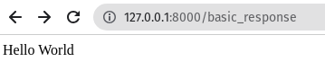
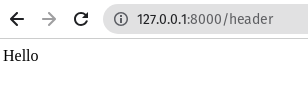
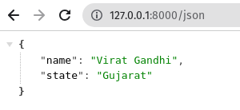

RESPONSES
BASIC RESPONSE
All routes and controllers should return a response to be sent back to the user’s browser. Laravel provides several different ways to return responses. The most basic response is returning a string from a route or controller.
Step 1 : Add the following code to routes/web.php :
Route::get('/basic_response', function () {
return 'Hello World';
});
Step 2 : Visit the following URL to test :
http://localhost:8000/basic_response
Step 3 : The output will appear as shown in the following image.
ATTACHING HEADERS
The response can be attached to headers using the header() method.
Step 1 : Add the following code to routes/web.php :
Route::get('/header',function() {
return response("Hello", 200)->header('Content-Type', 'text/html');
});
Step 2 : Visit the following URL to test :
http://localhost:8000/header
Step 3 : The output will appear as shown in the following image.
JSON RESPONSE
JSON response can be sent using the json method. This method will automatically set the Content-Type header to application/json. The json method will automatically convert the array into appropriate json response.
Step 1 : Add the following code to routes/web.php :
Route::get('json',function() {
return response()->json(['name' => 'Virat Gandhi', 'state' => 'Gujarat']);
});
Step 2 : Visit the following URL to test :
http://localhost:8000/json
Step 3 : The output will appear as shown in the following image.
